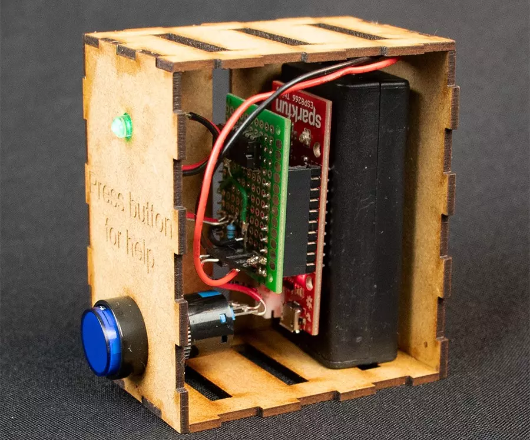
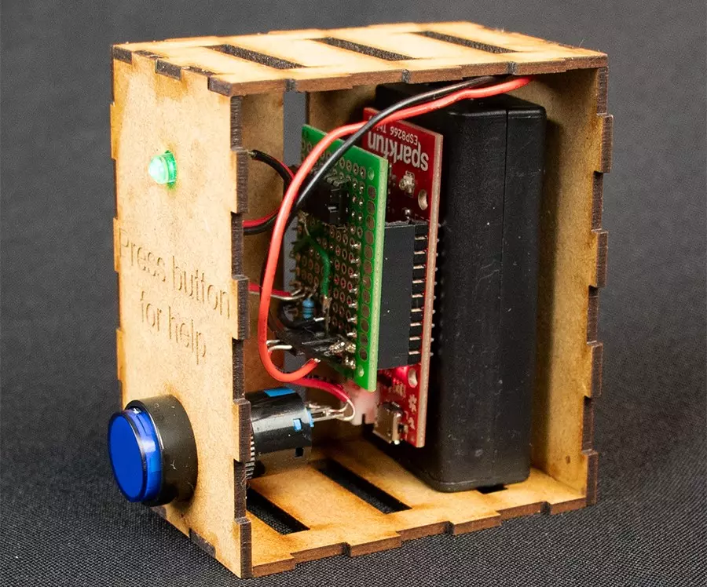

Ludis: Increasing Fitness Guidance
A design project that revolves around increasing fitness guidance. It introduces a system that allows users to call over trainers, lowering the barriers for asking for help.
Project date
Project focus
Project Type
Ludis: Increasing Fitness Guidance
Practicing fitness has a range of both physical and mental
benefits and is widely practiced due to low entry barriers,
low costs and abundant gyms, with the industry growing
larger every day. However, there are also problems that
arise within this context. Based on explorative interviews
several themes arose, including problems with intimidation,
occupation of equipment, form, beginner guidance and
motivation.
Personal guidance can offer a range
of benefits, however this is often impossible at the price
point that large franchises offer. A study during the
project also showed that a barrier is often experienced when
asking for help, especially with beginners, but this can
often be the first step to building a connection with the
trainers. To aid in overcoming this barrier, a system was
designed which allows the users to covertly ask for help. It
consists of a small box with a button, which will notify the
trainers that the person needs help. The system was designed
to be as simple as possible, to reduce the barrier and not
take away from interaction between user and trainer.
Learning points:
This project focused on exploring opportunities in a
vitality context and developing testable prototypes. It
taught me about conducting, as well as structuring
contextual research. Furthermore, I gained a lot of
experience with creating wirelessly communicating
prototypes. I realized that I do prefer to work within a
team of other designers and with a narrower scope. Even
though users were involved very early in the process, it
would have been very beneficial to include other
stakeholders, such as trainers, early in the process as
well.
 
